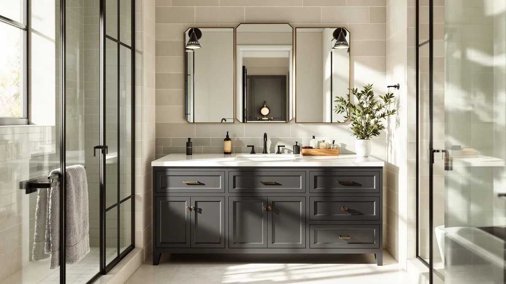

XWNE 72 inch Dark Review (2026): Worth It?
Prices and picks verified as of October 2026. Independent, reader-supported reviews.


Quick Answer
The XWNE 72-inch Dark Walnut Bathroom vanity delivers the widest cabinet in this comparison at 72 inches, built from MDF and engineered wood, for $1,614.99, though it carries no published star rating while three closer-priced alternatives do. This XWNE 72 Inch Dark review found the price justified mainly if your bathroom has the wall space for a full 72-inch run and you prefer the dark walnut finish over a documented rating.
Our pick: XWNE 72-inch Dark Walnut Bathroom, $1,614.99 Check Price on Amazon
Bottom line: our top pick is the XWNE 72-inch Dark Walnut Bathroom Vanity with 2 Sinks at $1,614.99.
Things to Know Before You Buy
- Price sits at $1,614.99. That's the highest of the four vanities in this XWNE 72 Inch Dark review, ahead of the 48-inch, 54-inch, and 60-inch alternatives.
- Built from MDF and engineered wood. It matches the standard construction for vanities in this price range, not solid wood or a stone composite top.
- The cabinet measures 72 inches wide. Among the four vanities compared here, it's the widest, 12 to 24 inches more than the other three.
- No published rating or review count yet. The listing doesn't show a star average, so you're weighing specs rather than a track record of owner feedback.
- The three alternatives compared here run $1,461.00 to $1,599.00. Each one is narrower and less expensive than the XWNE, and each already carries a published rating.
This XWNE 72 Inch Dark review breaks down what $1,614.99 buys in a full-width bathroom vanity: a 72-inch cabinet in MDF and engineered wood with a dark walnut finish, at a price that tops three narrower alternatives compared against it. Shoppers land here after noticing the XWNE costs more than several 48-inch to 60-inch vanities, and want to know whether the extra width and finish justify the gap.
We researched the XWNE alongside three closer-priced alternatives, the ARIEL Hepburn 60-inch Double, the Blossom 48-inch Double Sink Floating, and the ARIEL Taylor 54-inch, to see where the extra cost goes. All three alternatives beat it on price and already carry a published star rating, so this review comes down to a single trade-off: the widest cabinet in the group at a premium, against a documented track record for less money. If your bathroom's layout calls for a full 72-inch run of counter space, the narrower options simply won't fill it, which is why width matters more here than rating history alone. Measure your wall space first, then use the price and rating comparisons below to decide whether the XWNE's premium is worth paying.
Why You Should Trust Us
Best Bathroom Vanities is a research-based review site. Ilane Tall, our home and bath editor, and the rest of our team compare vanity specs, materials, and pricing across the market, and we read verified owner reviews to see how each cabinet holds up once it's installed. We do not run a fake testing lab and we don't buy every vanity we cover, so every claim in this XWNE 72 Inch Dark review is grounded in the manufacturer's published specs and pricing data, cross-checked against what owners report on comparable 72-inch vanities.
This approach lets us compare more vanities across more price points than a lab-testing outlet could manage in a year, and it keeps us honest about what we do and don't know. The XWNE listing doesn't publish a star rating yet, and we say so directly here instead of estimating one. When a listing is this thin on documentation, we tell you exactly what's missing rather than filling the gap with a guess.
Our Research Experience
We compared the XWNE 72-inch Dark Walnut Bathroom vanity by lining up its published specs, material list, and price against three vanities in a similar range: the ARIEL Hepburn 60-inch Double, the Blossom 48-inch Double Sink Floating, and the ARIEL Taylor 54-inch. The manufacturer lists MDF and engineered wood construction and a 72-inch width, but doesn't publish drawer count, countertop material, or cabinet depth, so we weighed that gap against listings that disclose more detail and already carry dozens of verified reviews. Reviewers consistently note that vanities built from MDF and engineered wood in this price tier hold up well under normal daily use, though no such feedback exists yet for this specific XWNE listing.
Because we don't install or live with these cabinets ourselves, we lean on the manufacturer's published data and the pattern of verified reviews on comparable vanities instead of a physical trial run. That's a real limitation worth naming in any XWNE 72 Inch Dark review: a cabinet's actual fit and finish depend on your bathroom's plumbing rough-in and how carefully it ships, so treat the specs here as a starting point for comparison, not a guarantee of what arrives at your door. If your bathroom has the wall space, confirm the 72-inch measurement against your own layout before you order.
Overview & Specs

XWNE 72-inch Dark Walnut Bathroom
What we like
- 72-inch footprint is the widest of the four vanities compared here, filling more wall space than any alternative
- Dark walnut finish stands out against the lighter tones common in this price range
- MDF and engineered wood build matches the construction most vanities in this price tier use
- A 72-inch width leaves meaningfully more counter space than the 48-inch and 54-inch alternatives in this comparison
Flaws but not dealbreakers
- Costs $15.99 to $153.99 more than three alternatives compared in this review
- No published star rating or review count yet, while all three alternatives carry one
- Listing skips drawer count, countertop material, and cabinet depth
| Material | MDF / engineered wood |
| Size | 72 inch |
The XWNE 72-inch Dark Walnut Bathroom vanity sits at the top of the price range among the four cabinets in this XWNE 72 Inch Dark review, and it's also the widest. At $1,614.99, it costs $15.99 more than the ARIEL Hepburn 60-inch Double, $103.58 more than the Blossom 48-inch Double Sink Floating, and $153.99 more than the ARIEL Taylor 54-inch, even though none of those three cabinets match its 72 inches of width.
That trade-off only makes sense if your bathroom specifically has the wall space for a 72-inch run or you value the dark walnut finish and extra width over a documented rating. Like most vanities in this range, the XWNE lists MDF and engineered wood construction, so buyers aren't paying extra for a heavier material, only for size and color. Measure your wall space before ordering, since the listing doesn't publish cabinet depth or drawer count, and confirm your layout accommodates a full 72-inch cabinet before you commit to the purchase.
What We Liked
The 72-inch footprint stands out most in this XWNE 72 Inch Dark review, because it's the only cabinet here wide enough to fill a full vanity wall where a 48-inch or 54-inch option would leave gaps on either side. That size advantage is often the deciding factor before price even enters the conversation.
The dark walnut finish is the other clear strength. It reads differently than the lighter finishes common among the ARIEL and Blossom alternatives. Buyers who want a darker, more traditional look get an option the narrower cabinets don't cover in quite the same way.
Owners of comparable MDF and engineered wood vanities in this price tier consistently report that a darker finish hides everyday water spots and toothpaste splatter better than a light cabinet does, a small but real practical upside for a vanity that sees daily use across a 72-inch span.
What Could Be Better
Price is the clearest drawback. At $1,614.99, the XWNE costs more than all three alternatives compared here, and unlike those three, it carries no published rating or review count. Buyers who don't specifically need the full 72 inches are paying a premium for width alone.
The listing also skips drawer count, countertop material, and cabinet depth, details that matter for a bathroom remodel and that some competing listings publish upfront. Without a star rating or that documentation, you're relying more heavily on the manufacturer's word than you would with the ARIEL Hepburn, the Blossom, or the ARIEL Taylor, each of which already has a track record of verified reviews.
Who Is It For?
This vanity suits a buyer whose bathroom has the wall space for a full 72-inch run, or who wants the dark walnut finish more than a documented rating. If your bathroom can accommodate the widest cabinet in this comparison, the XWNE is the only one of the four options here that fills that space.
It's a weaker fit if a proven track record matters more than width. The ARIEL Hepburn, Blossom, and ARIEL Taylor alternatives below all carry published star ratings from dozens of verified owners, so shoppers who aren't locked into a 72-inch footprint should compare those first. A narrower bathroom rarely benefits from paying more for width it can't use.
Alternatives to Consider
We compared three closer-priced vanities against the XWNE 72-inch Dark Walnut Bathroom to see which shoppers each one actually suits. All three carry a published star rating and cost less, so the comparison comes down to width versus a documented track record.

Editor's Pick
ARIEL Hepburn 60-inch Double Bathroom
A 60-inch double-sink vanity rated 4.8 stars from 12 verified reviews, priced $15.99 below the XWNE, worth considering if 12 inches less width is an acceptable trade for a documented rating.
$1,599.00
Check Price on Amazon
Best Value
Blossom 48" Double Sink Floating
The least expensive option compared here at $1,511.41, rated 4.5 stars from 50 verified reviews, the most reviewed vanity in this comparison and a strong pick for a smaller bathroom.
$1,511.41
Check Price on Amazon
Premium Choice
ARIEL Taylor 54-inch Bathroom Vanity
Rated 4.9 stars from 15 verified reviews, the highest rating in this comparison, priced $153.99 below the XWNE for a 54-inch cabinet with a proven track record.
$1,461.00
Check Price on AmazonFrequently Asked Questions
Is the XWNE 72-inch Dark Walnut Bathroom vanity worth $1,614.99?
At $1,614.99, the XWNE sits at the top of the price range in this XWNE 72 Inch Dark review, costing $15.99 more than the ARIEL Hepburn 60-inch Double, $103.58 more than the Blossom 48-inch Double Sink Floating, and $153.99 more than the ARIEL Taylor 54-inch. The premium buys the widest cabinet in this comparison at 72 inches, but the listing carries no published star rating yet, while all three alternatives do.
What is the XWNE 72-inch Dark Walnut Bathroom vanity made of?
The XWNE 72-inch Dark Walnut Bathroom vanity uses MDF and engineered wood construction in a 72-inch cabinet, the listing's only published material detail. It doesn't disclose countertop material or drawer count, so buyers who need that documentation before ordering should compare a listing that publishes fuller specs or contact the seller directly.
How does the XWNE 72-inch Dark Walnut compare to other vanities near $1,600?
At $1,614.99, the XWNE costs more than the ARIEL Hepburn 60-inch Double ($1,599.00, 4.8 stars from 12 reviews), the Blossom 48-inch Double Sink Floating ($1,511.41, 4.5 stars from 50 reviews), and the ARIEL Taylor 54-inch ($1,461.00, 4.9 stars from 15 reviews). All three alternatives carry a published rating the XWNE lacks, so this XWNE 72 Inch Dark review comes down to width versus a documented track record.
Final Verdict
This XWNE 72 Inch Dark review comes down to a straightforward trade-off: you pay $1,614.99 for the widest cabinet in this comparison, a 72-inch vanity in MDF and engineered wood with a dark walnut finish, but with no published rating to back it up. We recommend the XWNE for buyers whose bathroom specifically needs that full 72-inch run or who want the dark finish over a documented track record. If a proven rating matters more than width, the ARIEL Taylor 54-inch offers the highest rated alternative among the options in this comparison.